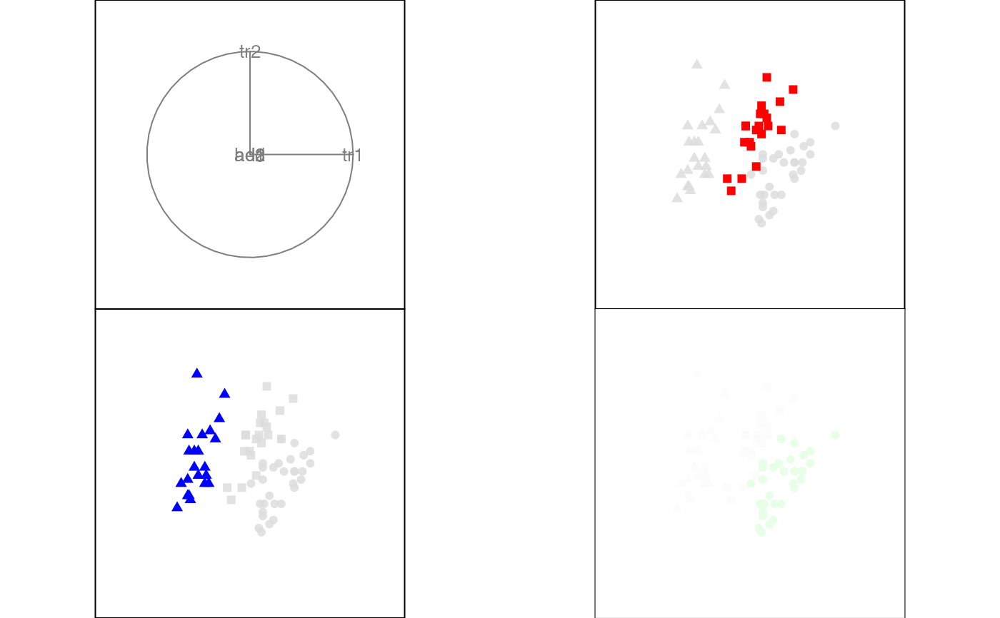
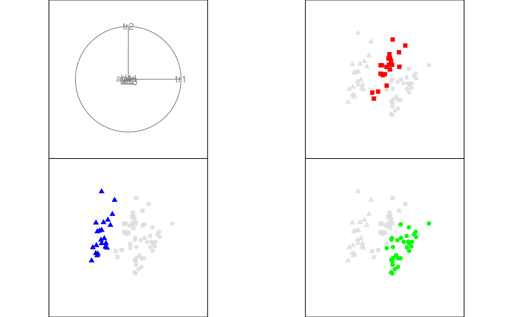
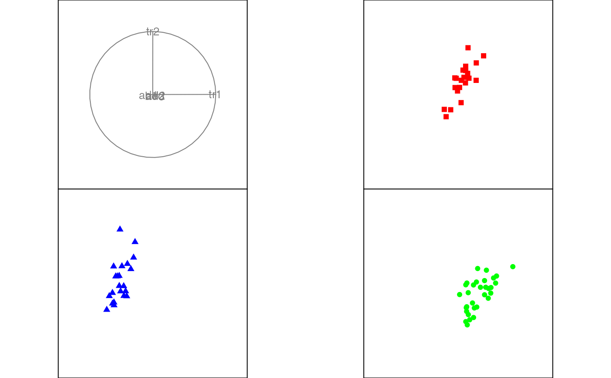
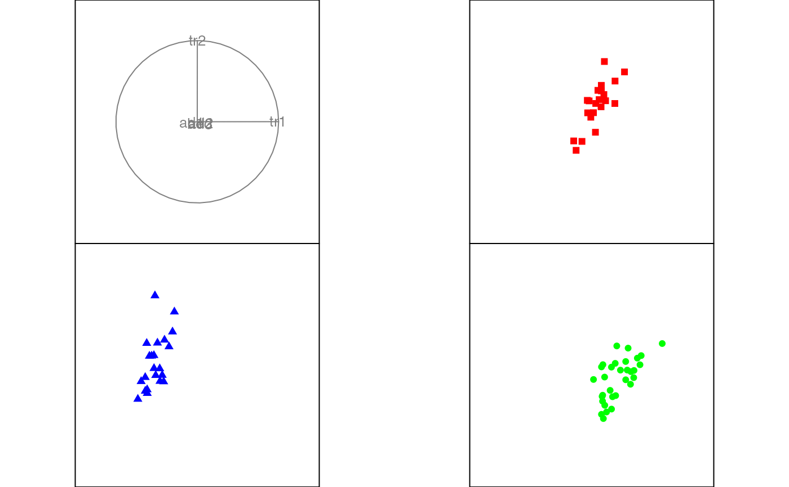

Display 2D tour projections displayed separately by groups
Source:R/display-groupxy.r
display_groupxy.RdThis function is designed to allow comparisons across multiple groups, especially for examining things like two (or more) different models on the same data. The primary display is a scatterplot, with lines or contours overlaid.
display_groupxy(
centr = TRUE,
axes = "center",
half_range = NULL,
col = "black",
pch = 20,
cex = 1,
edges = NULL,
group_by = NULL,
plot_xgp = TRUE,
...
)
animate_groupxy(data, tour_path = grand_tour(), ...)Arguments
- centr
if TRUE, centers projected data to (0,0). This pins the center of data cloud and make it easier to focus on the changing shape rather than position.
- axes
position of the axes: center, bottomleft or off
- half_range
half range to use when calculating limits of projected. If not set, defaults to maximum distance from origin to each row of data.
- col
color to be plotted. Defaults to "black"
- pch
shape of the point to be plotted. Defaults to 20.
- cex
size of the point to be plotted. Defaults to 1.
- edges
A two column integer matrix giving indices of ends of lines.
- group_by
variable to group by. Must have less than 25 unique values.
- plot_xgp
if TRUE, plots points from other groups in light grey
- ...
other arguments passed on to
animateanddisplay_groupxy- data
matrix, or data frame containing numeric columns
- tour_path
tour path generator, defaults to 2d grand tour
Examples
f <- flea[, 1:6]
col <- rainbow(length(unique(flea$species)))[as.numeric(as.factor(flea$species))]
pch <- as.numeric(flea$species) + 14
animate_groupxy(f, col = col, pch = pch, group_by = flea$species)
#> Converting input data to the required matrix format.
#> Using half_range 0.98


animate_groupxy(f, col = col, pch = pch, group_by = flea$species, plot_xgp = FALSE)
#> Converting input data to the required matrix format.
#> Using half_range 0.98
 
